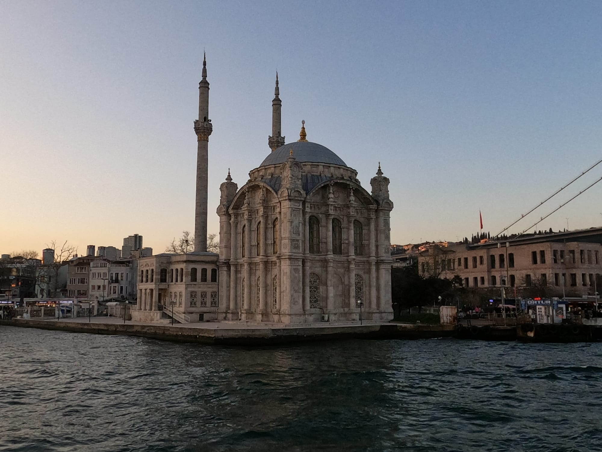

Istanbul monuments
- The Blue Mosque: Also known as the Sultanahmet Mosque, it is one of the most iconic sites in Istanbul, with its six minarets and impressive domes.
- Hagia Sophia: An impressive historical building that was built as a church in the 6th century and later converted into a mosque during the Ottoman era. Nowadays, it is a museum.
- Topkapi Palace: The residence of Ottoman sultans for over 400 years, it is an impressive complex that features beautiful gardens, museums, and exhibitions.
- The Grand Bazaar: A covered market that offers a wide variety of products, from jewelry to carpets and spices.
- The Bosphorus: The strait that separates Europe and Asia, it is a beautiful place for a boat ride and enjoying the views of the city from the water.
- The Galata Tower: A historic tower that offers impressive views of the city and is a popular spot for taking photos.
- The Basilica Cistern: An ancient and mysterious underground cistern that used to store water for the city.
- Dolmabahçe Palace: An impressive palace built in the neoclassical style on the shores of the Bosphorus.
